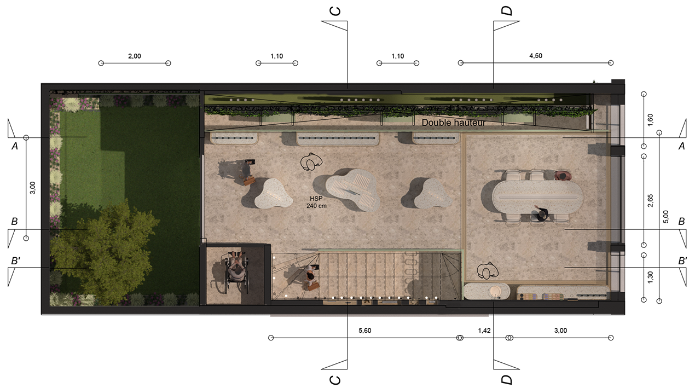
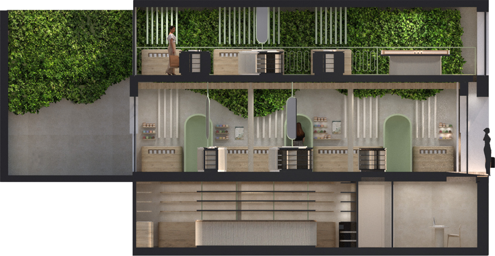

Plans du rez-de-chaussé & du premier étage

Plan du RDC

Plan du R+1

Coupe AA
Dans vingt ans, Yves Rocher sera une marque pleinement engagée dans une démarche durable, fidèle à son héritage végétal et tournée vers un futur respectueux du vivant. Chaque aspect, de la composition des produits aux matériaux utilisés pour ses boutiques, participera à une approche consciente et respectueuse de l’environnement, tout en tirant parti de la technologie de manière réfléchie, notamment grâce aux capsules, pour améliorer l’expérience client sans dénaturer l’essence de la marque.
Le magasin se transformera en un véritable écosystème expérientiel. Au rez-de- chaussée, des capsules d’analyse permettront d’étudier le visage et les cheveux des visiteurs afin de leur proposer des produits personnalisés, vendus en vrac ou dans des boites en liège pour réduire les emballages et encourager une consommation raisonnée.
À l’étage, les clients pourront acheter les ingrédients nécessaires à la fabrication de leurs propres cosmétiques. Un atelier ouvert accueillera également des sessions de création et de transmission, où le geste artisanal retrouvera toute sa place.
Enfin, un jardin accessible depuis le rez-de-chaussée permettra aux visiteurs de se détendre, de se promener et de découvrir les plantes qui composent les produits de la marque, leur offrant ainsi un aperçu direct de leur origine et de leur rôle.
Yves Rocher, en 2045, deviendra ainsi un lieu vivant, durable et sensible — un espace où beauté, nature, innovation raisonnée et savoir se rencontreront pour réinventer la cosmétique de demain.
Logo d’Yves Rocher en 2045
Exemples de packaging utilisés par la marque
Plan du RDC
Plan du R+1
Coupe AA